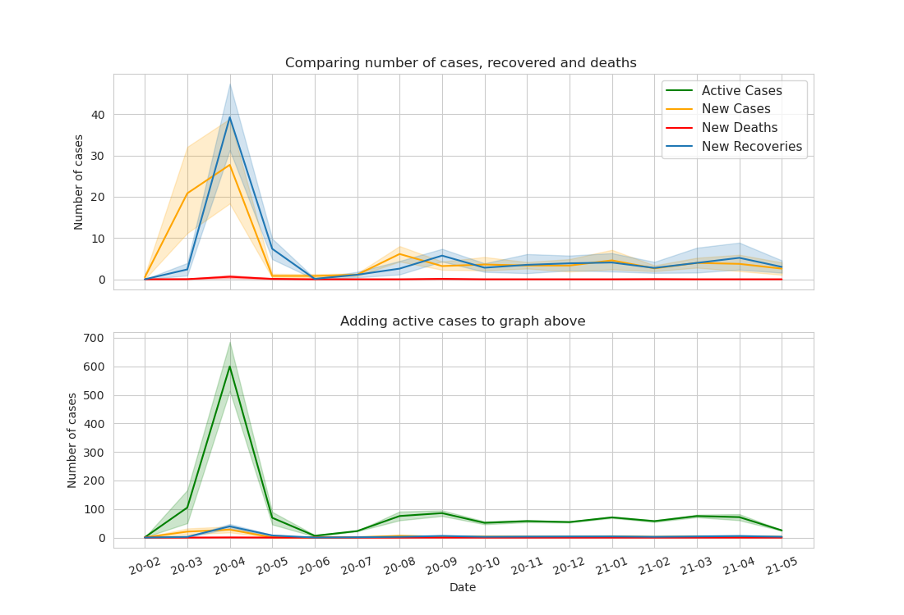

In June 2020 New Zealand's governments announce the country covid-free. While it didn't last long New Zealand is still one of the countries with low covid-19 cases and covid-related deaths. In this report, we will focus on comparing the covid-19 cases in New Zealand to other countries and try to analyze the government's response to the pandemic.
Additionally, we will show the demographic of covid-19 patients and how the pandemic influences different regions of New Zealand's economy.
To realise how exactly covid-19 looks like, we will compared it to the other countries:
Fig.2 - The total number of cases of COVID-19 per million in selected countries
Fig.3 - Number of confirmed cases by month
Fig. 4. - Number of deaths in New Zealand by month
Details
To better understand how exactly New Zealand handles COVID-19 and how the pandemic impacts the country, let's look at more detailed data. First, we take a look into the ratio between cases, recovers, and deaths and later look into the demographic of the COVID-19 patients.
Fig. 5. - Details of COVID-19 pandemic - new cases, death and recovering
Fig. 6. - Details of COVID-19 pandemic - total cases, death and recovering
Table 1. - The total number of cases of COVID-19 by sex
Fig. 7. - The total number of cases of COVID-19 by age
Vaccination
Although the pandemic has not that terrified result in New Zealand as in other countries it is still important to start proper vaccination.
Since the 28th February 2021, New Zealand started process of vaccinating its citizens.

Fig. 8. - The daily number of covid-19 cases vs daily vaccination
Fig. 9. - The vaccination ratio for selected countries
Alerts
As we mention before New Zealand didn't use the term lockdown - instead they introduce the 4 levels alert system, which was changed based on the COVID-19 cases. We will check how the system changed based on the date and pandemic status.
Fig.10. - Alert in New Zealand during 2020/2021 COVID-19 pandemic
Level 1
Level 2
Level 3
Level 4
Border restrictions for entering NZL
Face coverings on public transport
Keep your distance
Self-isolation, quarantine and testing
Face coverings on public transport
Keep your distance
Limiteed gatherings and events
Stay within your household bubble
Travel between regions is heavily restricted.
Gatherings of up to 10 people
Schools can open but will have limited capacity.
Travel is severely limited
All gatherings are cancelled and all public venues are closed
Educational facilities are closed.
Businesses are closed except for essential services
Impact of COVID-19
Before Covid-19, Tourism was New Zealand's largest export industry and delivered $40.9 billion to the country. Tourism made a significant positive impact on regional economies supporting employment by directly employing 8.4 percent (229,566 people) of the New Zealand workforce.
- New Zealand Tourism
Fig. 11. - The employment rate in New Zealand and selected countries
Table 2. - The total number of cases of COVID-19 by travel of infected
Fig.12 - Arrivals in New Zealand by the airportConclusion
In this report, we focused on analyzing the COVID-19 pandemic in New Zealand. As we showed, even though the pandemic was quite quickly got under control it still impacted the economy of the country. Most of the cases were presented in young people, which can result in very few death cases and much more recovered. The number of total cases was small enough even compared to countries in similar density or climate region. New Zealand government introduced the alert level system to control the lockdown system and they responded accordingly to the number of new cases. As we can see New Zealand didn't slow down the vaccination even after having minimalizing their new cases.